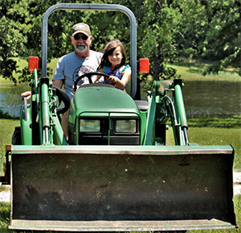

Weather Website Planning Document
Target Audience
The target audience of the snowfun.site web site is described below:
- Who: Residents of northeastern Utah and residents of southeastern Idaho. Students, Farmers, Teachers, and others: 17 to 60 years old.
- Technology: Modern and legacy solutions. Internet is not very fast in the rural areas, but Logan, Utah city, businesses and the university have High Speed Internet. The smartphones do have access to satellite connectivity.
- Income: Income levels will typicaly be between $30,000 through $80,000 annually.
- Motivation: Improve knowledge of mainstream technologies. Improve access to knowledge available through the Internet such as: Weather information provided by larger metropolitan area entities with larger research budgets.
- Site Plan | snow fun | https://chrisj63-git.github.io/lesson03/index.html
Personas
- Persona: Agriculturist
- 
- Fictional Name: Jim McDonald
- Job Title: Farmer
- Demographics: 42 years old, Married Father of four boys and one girl
- Goals and tasks:
- He is responsible to provide for his family by providing food for His family, neighbors, and their animals.
- His work time is utilized in researching the best crops and animals to grow for his environment.
- He follows the farmers almanac and local news outlets to predict coming weather patterns that will affect his crops.
- He takes time to pass on these skills to his 4 sons and daughter.
- Environment: Jim is comfortable using the Internet to research and gather information. He has a pc at home with a relatively low speed Internet connection. He has an unlimited data plan on his phone as he is away from the house most of the day.
- Quote: “If you have the faith of a mustard seed, you can do all things.”
- Persona: Business College Student
- Fictional Name: Skyler Thatcher
- Job Title: Student / part-time store clerk
- Demographics: 22 years old, single
- Goals and tasks:
- Complete Bachelor’s degree
- Advance at his work to become a manager (short term) and store owner (long term)
- Environment: Skyler is comfortable with computers, but the bandwidth is limited at home. He prefers to be at school or work where he has high speed Internet available. As a student doesn’t have many resources, his smartphone has limited data available.
- Quote: “I’ll try anything twice…… but only twice if it hurts.”
Scenarios
- Is it going to freeze my plants this week? Is it going to thaw out so I can plant my crops?
- How many layers of clothes will I need to take on my tractor today?
- Should I plug in my oil dip stick to keep my truck from freezing up?
- Will there be enough water to raise my crops next year?
- Will I need to leave early to drive to Logan to school or work?
- Will there be enough snow for me to go skiing or snowmobiling?